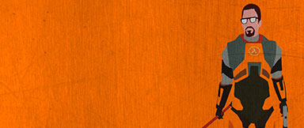

¿Half-Life 3?
La tan esperada secuela que nunca llega. Tras la sorpresa que supuso Half Life Alyx muchos fan mantienen la esperanza. ¿Nos sorprenderá Valve con tan asiada secuela en poco tiempo?
El nuevo juego de la saga se pasa a VR...

La tan esperada secuela que nunca llega. Tras la sorpresa que supuso Half Life Alyx muchos fan mantienen la esperanza. ¿Nos sorprenderá Valve con tan asiada secuela en poco tiempo?
El Imperio Combine es el título de un inmenso y poderoso imperio interdimensional, compuesto por una gran variedad de especies esclavas. Su primera aparición fue en Half-Life 2.
Los Soldados Combine (o Soldados de la Alianza) son una unidad de infantería de la Vigilancia Combine. Ellos generalmente trabajan en grupos y tienen varios métodos de ataque.
Los Zancudos son enormes trípodes Combine, introducidos por primera vez en Half Life 2. Criaturas de un planeta desconocido las cuales fueron modificadas mediante la tecnología Combine.
G-Man es un personaje de la franquicia Half-Life. Su historia de fondo es desconocida, pero por lo que sabemos G-Man es quien desempeña el papel de supervisor y empresario.
Alyx Vance es la coprotagonista de Half-Life 2 y la protagonista de Half-Life: Alyx. Ella es una prominente figura en la batalla de La Resistencia contra La Alianza que produjo el inicio de El Levantamiento.
Hace unos días desde la página de NVIDIA se presentó un proyecto fan que aplica la tecnología RTX sobre el juego Half-Life 2. Esta tecnología mejora los gráficos del juego original.
Los Headcrab, son seres vivos omnívoros y parasitos. También son ampliamente considerados como uno de los alienígenas más emblemáticos de Half-Life.